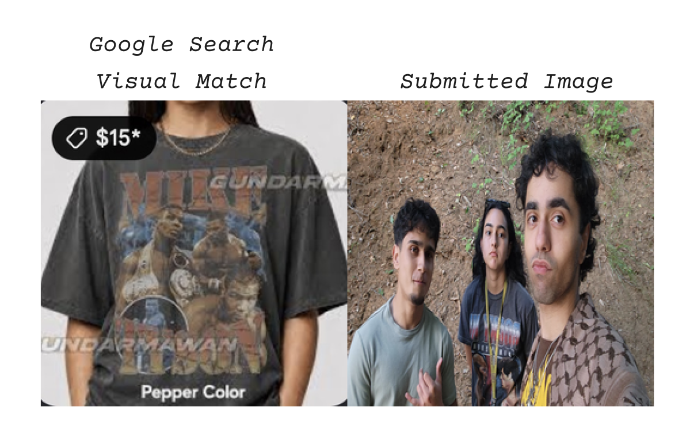
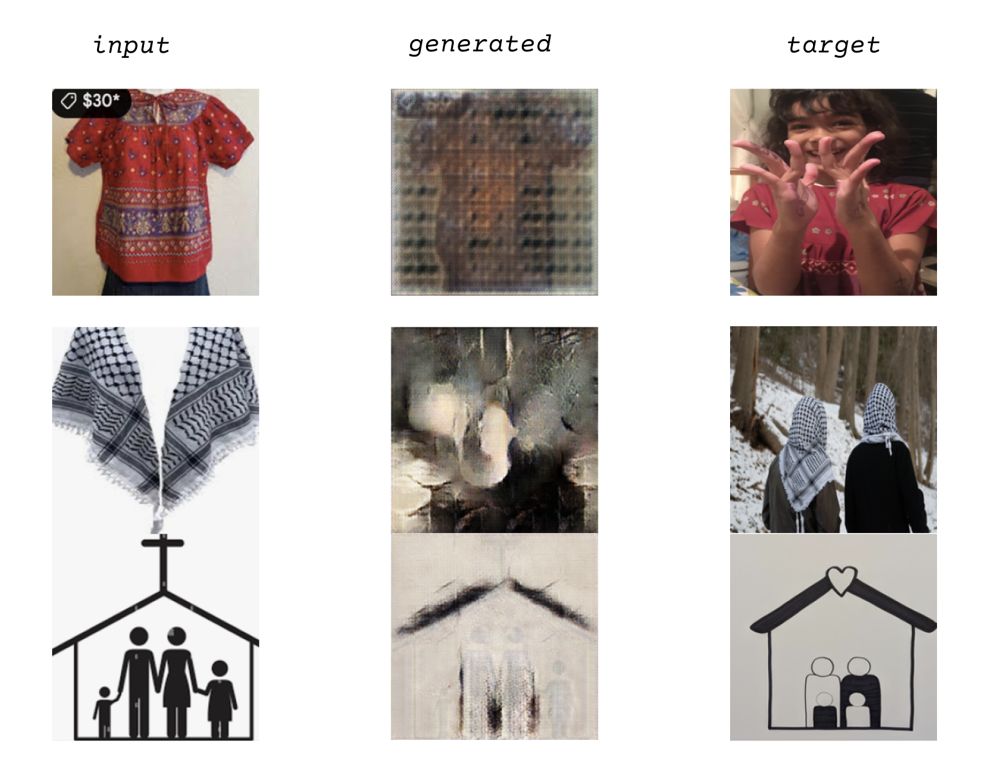

Elisa Elorza
Data collection as an intentional and human-centered practice was central to this project. I began by sending a text to friends, colleagues and acquaintances explaining a little bit about this project, and requesting:
“images that depict the idea or feeling of HOME for you. It can show anything at all, a meal, an object, place, person, painting, model, map- anything that subjectively carries the feeling of home for you. ****Please only upload images you took yourself or have the right to share**** “
For a week folks reached out via text, phone call and in person with questions, concern or out of curiosity. This made the data collection very slow and labor intensive, which I initially bristled at. In retrospect, it created a feeling of protectiveness about the dataset I collected, as well as a desire to stay engaged with it. It is somewhat similar to how I feel about my summer kitchen garden.🍅
After getting helpful feedback in class, I paired each image with the first Visual Match that came up from a Google Image search.

Refraining from acting as ‘the human in the loop’ during pairing, I used the first Visual Match that Google suggested without revising meaningless or odd combinations.
60 epochs were completed in 3 rounds of training before my model completely collapsed. Based on the final output images, it seems like ai was able to start ‘seeing’ cookies, sunsets, pie, some shapes and colors, textile patterns, horizons, horses, drawings, flowers, the sky and Mickey Mouse. It remained quite confused about images that were highly complex, had minimal contrast or were oddly paired. These examples are documented in the images I submitted here. The feeling of home seemed to be completely lost in both the Google Visual Match pairing and the AI training.

Books I was reading/referencing as I worked on this project Atlas of AI, Kate Crawford; Ways of Being, James Bridle; Digital Energetics, Pasek Lin and Cooper Kinder.